8. Grafen av en funktion
Då vi beräknar värden för funktioner för flera invärden, \(x\), ger de ut utvärden, \(y\). Dessa samband kan vi samla i en tabell. Tabellen ger oss talpar, \((x,y)\), som uppfyller funktionens ekvation. De talpar, punkter, som uppfyller funktionens ekvation bildar funktionens graf.
Vi studerar funktionen \(y=2x-1\). För att rita grafen av den i ett koordinatsystem behöver vi räkna ut några punkter.
| \(x\) | \(y=2x-1\) |
| \(-1\) | \(2\cdot( -1) -1 = -3\) |
| \(0\) | \(2\cdot 0 -1 = -1\) |
| \(1\) | \(2\cdot 1 -1 = 1\) |
| \(2\) | \(2\cdot 2 -1 = 3\) |
| \(3\) | \(2\cdot 3 -1 = 5\) |
Grafen av funktionen ser ut som följande:
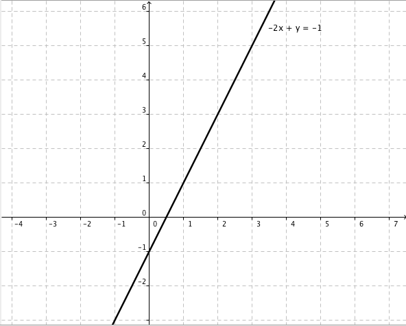
Vi ser att \(y\) alltid är två gånger \(x\) minus ett, \(2x-1\). De tal som vi kan sätta in i funktionen bildar funktionens definitionsmängd. Dessa finner vi på \(x\)-axeln. De tal som kommer ut ur funktionen bildar funktionens värdemängd och dessa finner vi på \(y\)-axeln.
En funktion ger oss ett samband mellan definitionsmängd och värdemängd. Funktioner betecknas ofta med \(f\), och vill vi berätta om vad som händer i funktionen, skriver vi \(f(x)=2x-1\).
Bestäm defintionsmängd och värdemängd för följande funktioner:
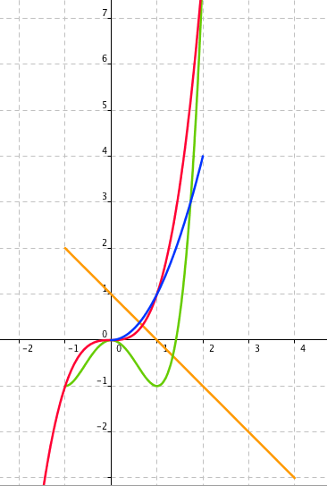
För det skall vara frågan om en funktion får inte ett element från definitionsmängden tilldelas två olika värden i värdemängden. Man talar om att sambandet mellan definitionsmängd och värdemängd skall vara entydigt. Dock går det bra att ett element i värdemängden får sitt värde från två olika element i definitionsmängden, något som inträffar med t.ex. funktionen \(f(x)=x^2\).
Grafen för en funktion på papper
- Gör en tabell av värdena för funktionen.
- Bilda talpar: \((x,y)\).
- Placera ut punkterna i ett koordinatsystem.
- Sammanbind punkterna till en graf. Använd dig av din konstnärliga hand. Funktioner som byter riktning är inte vassa.
Grafen av en funktion på GeoGebra
Uppgifter
Vilka av följande grafer representerar funktioner?
Grafen representerar en funktion. Grafen representerar inte en funktion. 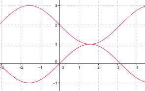 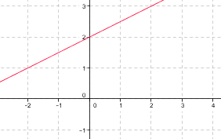 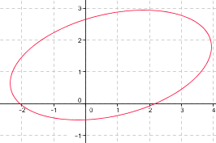 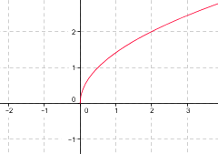 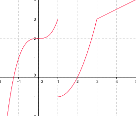 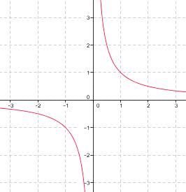 Grafen representerar en funktion. Grafen representerar inte en funktion. - Rita grafen av funktionen \(f(x)=3x-3\) i ett koordinatsystem på papper genom att antingen gå via en tabell eller annan metod.
Vi bestämmer ett par punkter på grafen:
\(x\) \(y=3x-3\) \(0\) \(3\cdot 0 - 3 = -3\) \(1\) \(3\cdot 1 - 3 = 3-3 = 0\) \(2\) \(3\cdot 2 -3 = 6-3 = 3\) 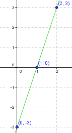
- Rita grafen av funktionen \(f(x)=-x+2\) i ett koordinatsystem på papper genom att antingen gå via en tabell eller annan metod.
Lösningen
- Rita grafen av funktionen \(f(x)=2x-1\) på GeoGebra.
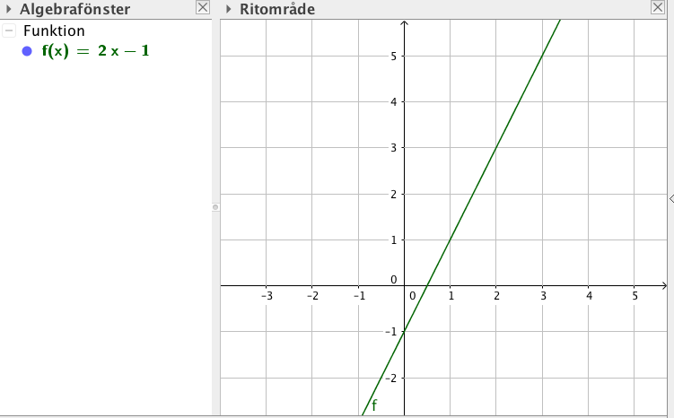
- Rita grafen av funktionen \(f(x)=\dfrac{1}{2}x+2\) på GeoGebra.
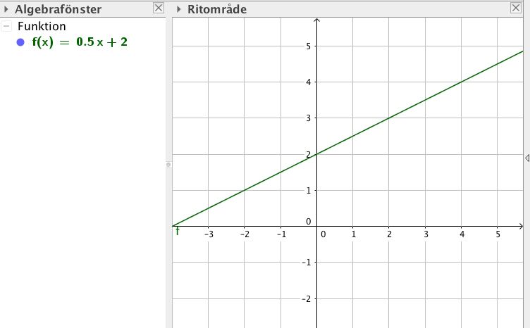
- Rita grafen av funktionen \(f(x)=3x^2-x-1\) och \(g(x)=-x+2\) i samma koordinatsystem på GeoGebra.
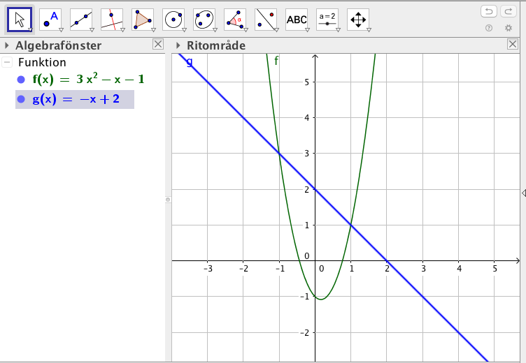
- Rita grafen av funktionen \(f(x)=\mid x-1 \mid\) på GeoGebra. Absolutbelopp får du med hjälp av abs( ).
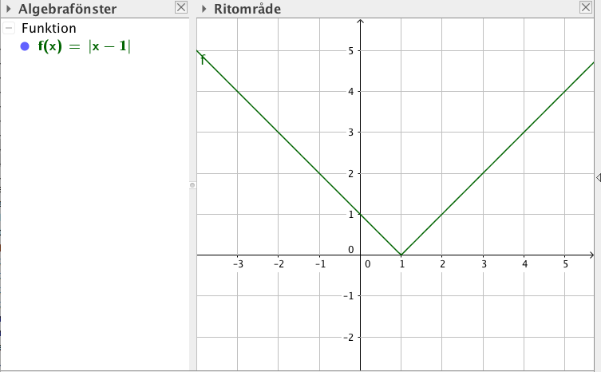
- Rita grafen av funktionen \(f(x)=\sqrt{x+1}\) på GeoGebra. Kvadratroten får du med sqrt( ).
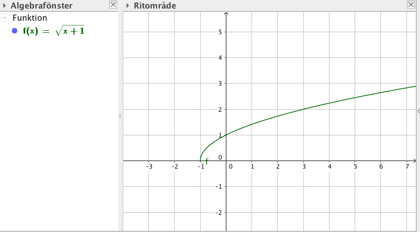
- Rita grafen av funktionen \(f(x)=\dfrac{1}{2}x+2\) i intervallet \([-1,4]\) på GeoGebra.
Då du i Inmatningsfältet skriver Funktion får du fram Funktion( < Funktion > , < Från x-värde > , < Till x-värde > ). Använd dig av denna.
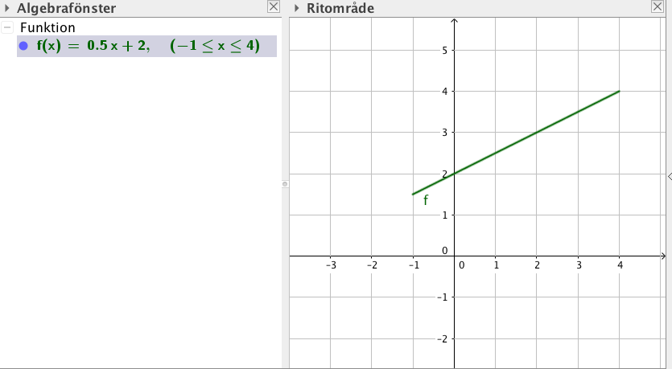
- Rita grafen av funktionen \(f(x)=x^2-x\) i intervallet \([-2,1]\) på GeoGebra.
Då du i Inmatningsfältet skriver Funktion får du fram Funktion( < Funktion > , < Från x-värde > , < Till x-värde > ). Använd dig av denna.
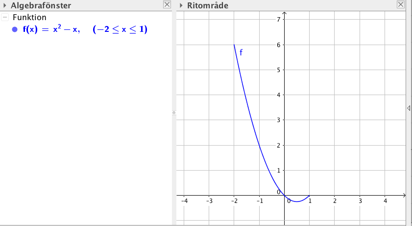
Rita graferna på GeoGebra av följande funktioner och kombinera rätt bild med rätt uttryck.
Välj bland följande uttryck:
\(f(x) = x\)\(f(x) = \mid x \mid\)\(f(x) = x^2\)\(f(x)=\sqrt{x}\)\(f(x)=\dfrac{1}{x}\)\(f(x) = x^3\)Uttryck 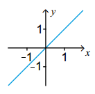 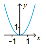 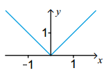 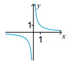 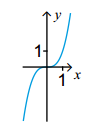 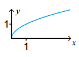 Korrekt svar \(f(x) = x\) \(f(x) = x^2\) \(f(x) = \mid x \mid\) \(f(x)=\dfrac{1}{x}\) \(f(x) = x^3\) \(f(x)=\sqrt{x}\) - Rita grafen av funktionen \(f(x)=\dfrac{1}{2}x^2-2x-2\) i ett koordinatsystem.

Bestäm om följande relationer är funktioner. Om de är funktioner, bestäm också definitionsmängd och värdemängd.
Påstående 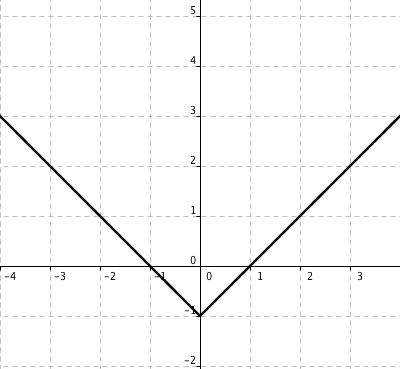 
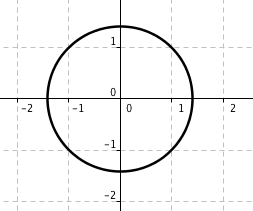 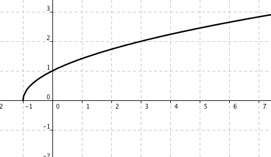 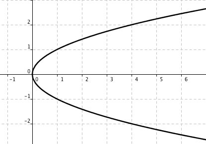 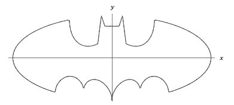 Funktion Inte funktion Påstående Funktion Inte funktion - Funktion. Definitionsmängd: \(\mathbb{R}\), värdemängd: \([-1,\infty[\).
- Funktion. Definitionsmängd: \(\mathbb{R}\), värdemängd: \([-1,1]\).
- Inte funktion, består av två funktioner.
- Funktion. Definitionsmängd: \([-1,\infty[\), värdemängd: \([0,\infty[\).
- Inte funktion, består av två funktioner.
- Inte funktion, består av flera funktioner.